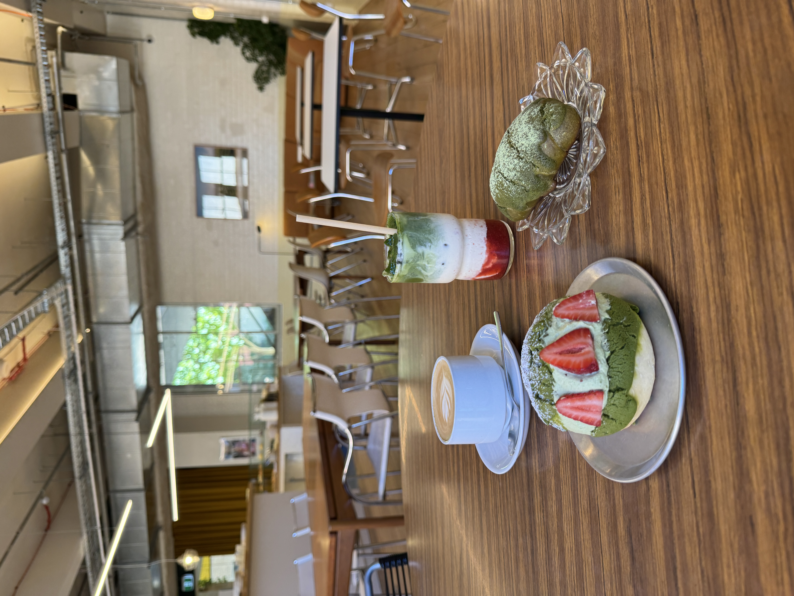
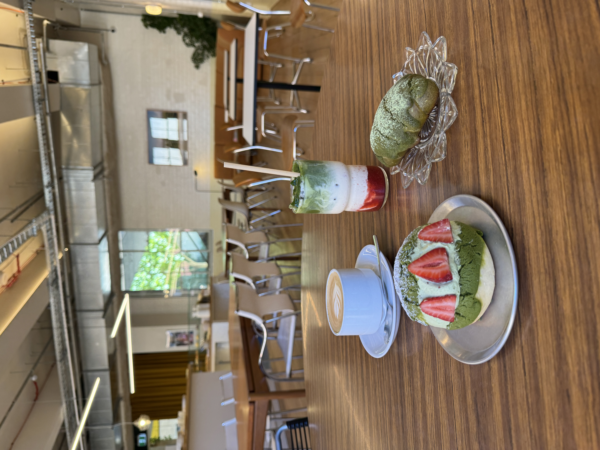
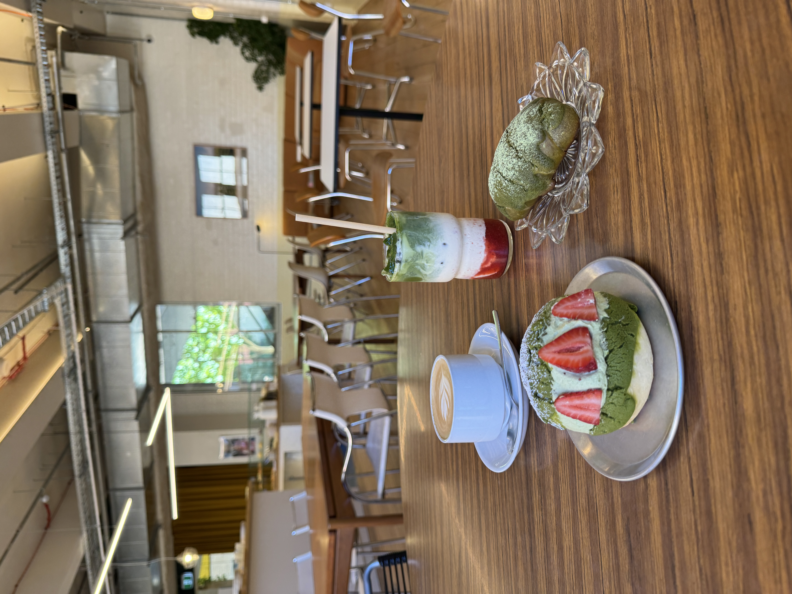

I’ve been on a café-hopping adventure around Melbourne lately, and I thought I’d share some of my favorite finds with you.
Café 1: Dua Bakehouse, Collingwood
 

I’ve been on a café-hopping adventure around Melbourne lately, and I thought I’d share some of my favorite finds with you.
